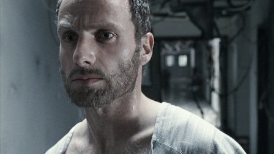
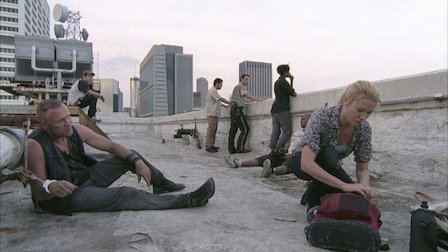
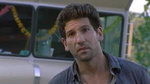
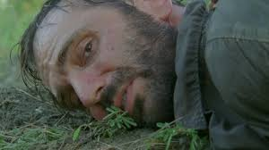
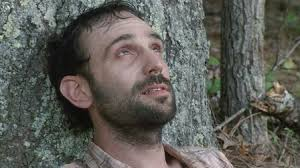

Episodes
Season 1

1. Days Gone Bye
Rick searches for his family in a world terrorized by the walking dead. Morgan and Duane help teach Rick the new rules for survival.

2. Guts
Rick unknowingly causes a group of survivors to be trapped by walkers and must confront an enemy far more dangerous than the undead.

3. Tell it to the Frogs
Rick goes back to atlandta to retrieve the bag of guns and save a man's life. Lori and Shane deal with the return of someone they thought was dead.

4. Vatos
Rick mission to atlanta is jeopardized when things go awry. Jim becomes unhinged in the camp.

5. Wildfire
Rick leads the group to the CDC after the attack. Jim must make a terrible life and death decision.